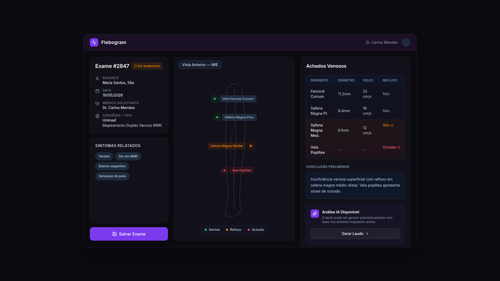
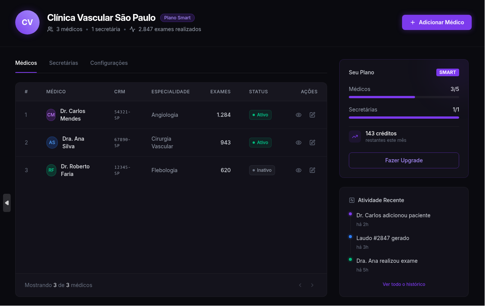
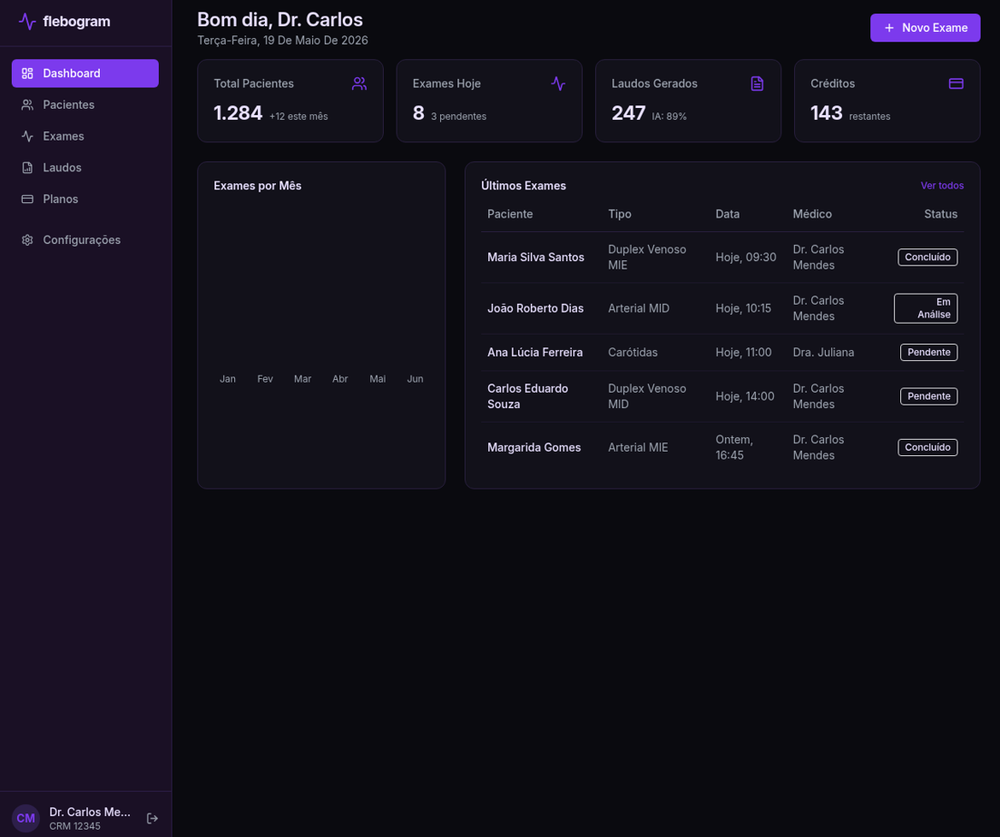
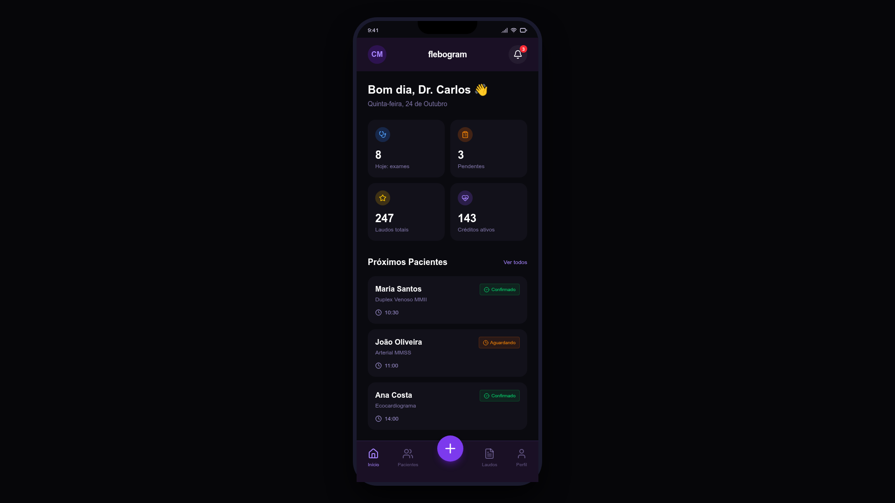
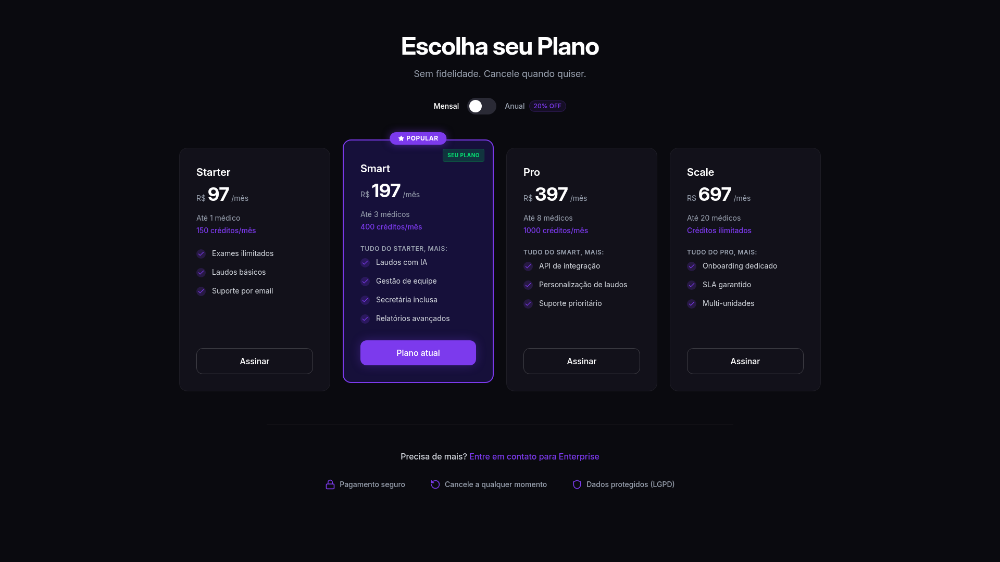

Antes do Flebogram
- Processo manual e repetitivo
- Laudos demorados
- Desenhos pouco padronizados
- Histórico fragmentado
O Flebogram é uma plataforma criada para transformar a rotina da angiologia, permitindo gerar laudos completos, imagens precisas do sistema venoso e PDFs profissionais com mais agilidade, segurança e clareza.

Dupla digitação, desenhos manuais, registros descentralizados e PDFs pouco padronizados consomem tempo, aumentam inconsistências e reduzem a fluidez do atendimento.
Uma solução digital desenvolvida para auxiliar angiologistas na criação de laudos completos, imagens precisas e registros organizados do sistema venoso. A interface foi pensada para economizar tempo, reduzir retrabalho e melhorar a comunicação com pacientes.
Os painéis do Flebogram seguem a linguagem escura, precisa e objetiva do aplicativo: foco no exame, no histórico, nos créditos disponíveis e na operação clínica.

Quinta-feira, 24 de Outubro



Elimine etapas manuais e gere documentos completos com mais fluidez.
Marque e explique alterações encontradas durante a avaliação com clareza visual.
Centralize informações importantes e reduza repetições na rotina de atendimento.
Compartilhe laudos de alta qualidade com pacientes, médicos e equipes clínicas.
Acesse exames anteriores, imagens e laudos com poucos cliques.
Use uma ferramenta objetiva, construída para o fluxo de atendimento médico.
Mantenha laudos e imagens armazenados com mais organização e integridade.
Troque de celular ou dispositivo sem perder acesso aos registros salvos.
A clareza visual facilita a análise, a tomada de decisão e a explicação do quadro ao paciente. O Flebogram transforma o laudo em uma documentação mais compreensível, padronizada e profissional.
Gere documentos em PDF com apresentação clara para pacientes, médicos parceiros, equipes clínicas ou arquivos internos. A clareza melhora a experiência do paciente e fortalece a imagem do profissional.
A interface é intuitiva, objetiva e pensada para a rotina médica, permitindo que o angiologista foque no paciente, não no aprendizado de uma ferramenta complexa.
O armazenamento em nuvem mantém laudos, imagens e históricos acessíveis de forma organizada, reduzindo riscos de perda de informações e preservando o acesso mesmo ao trocar de dispositivo.
Gerencie pacientes e acompanhe históricos de exames em um ambiente digital, facilitando consultas futuras, comparações e acompanhamento da evolução clínica.
Organize as informações essenciais para o exame.
Use a interface gráfica para representar o sistema venoso.
Crie um laudo estruturado, visual e profissional.
Envie ao paciente, médico solicitante ou equipe clínica.
Todos os dados ficam organizados para consultas futuras.
Explore os recursos, crie seus primeiros laudos, avalie a praticidade da ferramenta e descubra como o Flebogram pode otimizar sua rotina médica.
Cada crédito corresponde à execução de um exame dentro da plataforma. Escolha conforme seu volume de uso e ajuste a assinatura quando a rotina pedir mais escala.
R$55/mês
13 exames/mês R$ 4,12 por exame Assinar StarterR$110/mês
28 exames/mês R$ 3,93 por exame Assinar SmartR$165/mês
44 exames/mês R$ 3,74 por exame Assinar ProR$220/mês
62 exames/mês R$ 3,55 por exame Assinar ScaleR$550/mês
211 exames/mês R$ 2,61 por exame Falar com equipeFlexibilidade para começar, testar volume e ajustar o plano a qualquer momento.
| Plano | Valor mensal | Valor por exame | Exames/mês | Indicação |
|---|---|---|---|---|
| Starter | R$ 55,00 | R$ 4,12 | 13 | Uso inicial e baixo volume |
| Smart | R$ 110,00 | R$ 3,93 | 28 | Rotina frequente com previsibilidade |
| Pro | R$ 165,00 | R$ 3,74 | 44 | Melhor equilíbrio para consultórios |
| Scale | R$ 220,00 | R$ 3,55 | 62 | Uso recorrente e maior produtividade |
| Enterprise | R$ 550,00 | R$ 2,61 | 211 | Clínicas e uso intensivo |
Melhor condição por exame, previsibilidade orçamentária e operação contínua.
| Plano | Valor anual | Equivalência mensal | Valor por exame | Exames/mês |
|---|---|---|---|---|
| Starter | R$ 600,00 | R$ 50,00/mês | R$ 3,75 | 13 |
| Smart | R$ 1.200,00 | R$ 100,00/mês | R$ 3,57 | 28 |
| Pro | R$ 1.800,00 | R$ 150,00/mês | R$ 3,40 | 44 |
| Scale | R$ 2.400,00 | R$ 200,00/mês | R$ 3,23 | 62 |
| Enterprise | R$ 6.000,00 | R$ 500,00/mês | R$ 2,37 | 211 |
1 crédito corresponde a 1 exame. Os créditos são renovados conforme o plano contratado e não acumulam quando não utilizados.
Contratação mensal ou anual, com cartão de crédito, PIX e pagamento recorrente conforme periodicidade escolhida.
A assinatura pode ser cancelada a qualquer momento. O acesso permanece válido até o fim do período já pago.
O médico pode trocar de aparelho sem perder acesso aos laudos, imagens e históricos, que permanecem armazenados com segurança na nuvem.
Desenvolvido a partir das necessidades reais dos profissionais da área vascular: reduzir tarefas repetitivas, melhorar a apresentação dos laudos e tornar a rotina mais eficiente.
Mais clareza para o médico. Mais confiança para o paciente. Mais eficiência para a rotina clínica.
Não. É uma ferramenta de apoio à documentação, organização e geração de laudos. A decisão clínica continua sendo responsabilidade do profissional médico.
A proposta é oferecer uma experiência simples e intuitiva, com acesso prático e uso facilitado na rotina médica.
Sim. O Flebogram permite gerar PDFs profissionais para pacientes, outros médicos ou histórico clínico.
Sim. Laudos, imagens e históricos permanecem armazenados na nuvem para acesso posterior.
Sim. A compatibilidade entre dispositivos permite manter acesso aos dados mesmo ao trocar de aparelho.
Sim. Novos usuários podem utilizar os primeiros 20 laudos gratuitamente.
Sim. Pode ser usado por profissionais individuais e clínicas que desejam organizar laudos, pacientes e históricos.
Reduza tarefas manuais, gere laudos mais profissionais, organize seus pacientes e melhore a comunicação dos diagnósticos com uma plataforma criada para a prática vascular.